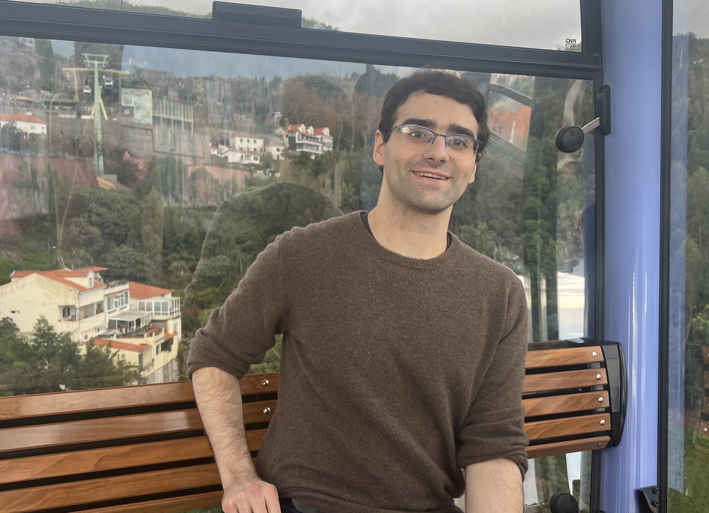

Peter Halmos
Hi! I’m a CS PhD student at Princeton University and am fortunate to be advised by Ben Raphael . I previously graduated from Columbia University as a Computer Science major with a concentration in Chemistry. At Columbia and the New York Genome Center I was fortunate to have met and worked with David Knowles who introduced me to the intersection of machine learning and computational biology.
Contact: ph3641 [at] princeton [dot] edu | Office: 35 Olden Street #318b
Research Interests
My research lies at the intersection of pure machine learning and computational biology. I am interested in the computational and mathematical aspects of optimal transport, including low-rank and neural optimal transport, as well as flow-based generative models. My focus is on developing and adapting these tools to quantitatively infer developmental trajectories in single-cell and spatial transcriptomics, and to understand the dynamics of cell differentiation in space and time.
Publications
- Learning Latent Trajectories in Developmental Time Series with
Hidden-Markov Optimal Transport
Peter Halmos, Julian Gold, Xinhao Liu, and Benjamin J. Raphael (in submission)
- Low-Rank Optimal Transport through Factor Relaxation with Latent Coupling
Peter Halmos, Xinhao Liu, Julian Gold, and Benjamin J. Raphael (Neurips 2024)
- DeST-OT: Alignment of Spatiotemporal Transcriptomics Data
Peter Halmos, Xinhao Liu, Julian Gold, Feng Chen, Li Ding, and Benjamin J. Raphael (Cell Systems, RECOMB 2024)
- Pooled RNA-IP approach to investigate variant effects on RBP binding and splicing
Megan Schertzer, Peter Halmos, K. Dobrindt, K. Brennand, David Knowles (ASHG 2022)
- System Identification for Continuous-time Linear Dynamical Systems
Peter Halmos, Jonathan Pillow, David Knowles (ArXiV)
Previous Research Projects
- I also worked at Foundation Medicine as an undergraduate, supervised by Justin Newberg, Garrett Frampton, and Megan Montesion. I worked on two projects accepted to AACR 2020 as abstracts
- Pan-chromosome analysis does not reveal parental or ancestral bias in chromosome loss of heterozygosity and Pan-cancer analysis of sex differences and their associations with ancestry and genomic biomarkers in a large comprehensive genomic profiling dataset
Teaching
I was previously a teaching assistant for introductory Organic Chemistry at Columbia with Professor Talha Siddiqui. During the summers of 2023, I was a Computer Science instructor at the King Summer Institute, where I taught an introductory Java course. I taught 3 hours/weekday for the duration of the course, wrote daily problem sets, held instructor office hours, and meet with students one on one to address questions they had about the material.
- COS 423 Theory of Algorithms, taught by Professor Robert Tarjan in Spring 2024
- COS 521 Advanced Algorithm Design, taught by Professor Huacheng Yu in Fall 2023
- COMS 4995 Advanced Algorithms, taught by Professor Alexandr Andoni in Spring 2022
- CSOR W4231 Analysis of Algorithms, taught by Professor Alexandr Andoni in Fall 2021
- MATH UN2030 Ordinary Differential Equations, taught by Professor Evgeni Dimitrov in Fall 2021
- CSOR W4231 Analysis of Algorithms, taught by Professor Xi Chen in Summer 2021
- COMS W3261 Computer Science Theory, taught by Timothy Randolph in Summer 2021
- MATH GU4042 Modern Algebra II, taught by Professor Inbar Klang in Spring 2021
- COMS W3203 Discrete Math: Combinatorics and Graph Theory, taught by Professor Ansaf Salleb-Aouissi in Fall 2020 and Spring 2021
Lastly, I gave lectures and served as a TA for the Columbia Undergraduate Math Society's Introduction to Proofs workshop in
Fall 2020 and Fall 2021.
This was a 4-week workshop series for undergraduate students that teaches how to write mathematical proofs.
>
Other
Outside of my academic interests I am an avid hiker and an amateur birder, botanist, and photographer. Credits for this website template go to Elena Gribelyuk, who I shamelessly lifted this from.